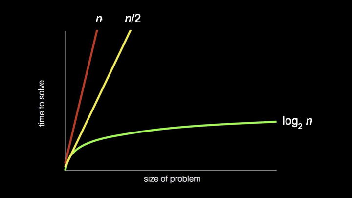

Lecture 0
- Welcome!
- Computer Science and Problem Solving
- Representing Information
- Unary and Binary
- Representing Numbers
- Representing Text
- Representing Images, Videos, and Music
- Algorithms
- Searching
- Linear Search
- Binary Search
- Running Time
- Pseudocode
- Summing Up
Welcome!
- Welcome to CS50 for Business, an introduction to computer science focused on interpreting information.
- This is an introduction to computer science for business, for law, for medicine, really for anyone working in the real world who wants to better understand this increasingly technological world of ours.
- Ultimately, and dare say most importantly, the goal is to be able to make more informed, better decisions as it relates to technology.
- Computer science itself is all about information. Indeed, the focus of today’s lecture is going to be on interpreting information.
- By the end of today’s lecture, you yourself will be able to speak and read binary, if a little slowly and with some practice.
Computer Science and Problem Solving
- What really is computer science beyond information? Well, it’s really the study of that information. How do you represent it? How do you process it?
- With computer science, of course, there’s this association with code and programming. But in this course, we’ll focus far more than on code and on first principles instead: underlying germs of ideas that underlie today’s technologies, today’s code, today’s systems, and more.
- At the end of the day, computer science really is about solving problems, sometimes with code, sometimes with paper and pencil, sometimes with other techniques as well.
- Code is really the translation of a lot of the ideas we’ll focus on in this course to a language that a computer can understand.
- Among the takeaways of computer science as a field is to equip you with techniques, namely abstraction being among them, via which you can solve problems in the real world.
- Abstraction allows you to take a step back at what seems to be a very large problem, perhaps decompose it into smaller problems, but at different levels of complexity.
- Among the things we’ll do in this course is get you more comfortable thinking at different levels of abstraction: high level, low level, and everything in between.
Representing Information
- Any problem in the world, by definition, has some input, like the actual problem you want to solve. The whole point of problem solving is to solve that problem, and that, therefore, we’ll call the output.
- The secret sauce in the middle, the proverbial black box, is where all of the interesting hard work gets done: the step by step process that takes that input and turns it into output.
-
This is true, really, of any piece of software, any problem in life. You could simplify it into this mental model:
input → [ ] → outputNotice that the box in the middle represents whatever process or algorithm converts the input to the output.
- We need to agree first on how we’re going to represent those inputs and outputs. The spoiler, of course, is that we are just going to use binary, ultimately zeros and ones.
Unary and Binary
- Let’s first rewind one step further from binary to unary, which is an even simpler system, a mechanism for representing information.
- The simplest way to count, say, the people in a room would be 1, 2, 3, 4, 5, simply using your fingers, your digits, if you will. That’s unary notation, because each finger in this model represents one person.
- More mathematically, unary is also called base-1 because you only have one symbol in your alphabet, one digit, if you will. However many fingers you have is how high you can count in that system.
- Computers use not unary, but binary. Mathematically, the base system is actually base-2. Instead of just having fingers at their disposal, computers have zeros and ones by convention, otherwise known as binary.
- A binary digit is just literally a zero or one. You’ve probably heard a simplified version of that phrase: bit, which is binary digit for short.
- A bit is just literally a zero or one. What computers are really storing inside their memory is a whole bunch of zeros and ones, a.k.a. bits. They’re storing these bits to represent information.
- How does a computer store a zero? At the end of the day, how do these devices work? Well, you have to charge your laptop or phone or plug it into the wall in order to use it. There’s going to be some flow of electrons that we could capture or hold on to.
- Maybe the simplest way to store information in binary using zeros and ones is just to leverage that electricity. If there’s no electricity and you’re not holding on to any of that electrical current, well, that’s how we represent a zero.
- You can imagine using one light bulb to represent a zero by just keeping it off with a switch. Meanwhile, if we want to store a one, we just grab some of the electricity, let it flow, and hang on to it. In order to represent a one, we can use the metaphor of a light bulb that is on.
- In short, just by toggling switches in a device that’s connected to some source of electricity, we can represent a zero or a one just by turning that thing off or on.
Representing Numbers
- Suppose that we want to count higher than one. We’re going to need more light bulbs, more switches, more bits. Suppose we have as many as three.
- We could represent the number zero by just leaving all three light bulbs off. To represent one, we turn on one light bulb. To represent two, turn on two light bulbs. To represent three, turn on a third.
- But this isn’t really the most scalable system for representing information. If you want to count to four, you need a fourth bit. If you want to count to five, you need a fifth bit, and so forth. That doesn’t feel very efficient.
- In fact, with three light bulbs you can count much higher than three alone. You can count as high as seven: 0, 1, 2, 3, 4, 5, 6, 7. But you need to take into account which of the light bulbs is on and when.
- You and I are familiar with a similar system. We use everyday base-10, where you actually have 10 digits in your vocabulary: 0, 1, 2, 3, 4, 5, 6, 7, 8, 9. That, of course, is the so-called decimal system, “dec” implying 10.
- How do we represent numbers using the decimal system? Consider three digits: 1, 2, 3. All of us probably immediately think “123.” But why?
-
The rightmost column is generally known as the ones place, then the tens place, then the hundreds place. The position of each symbol implies some magnitude:
100 10 1 1 2 3 Notice that 100 × 1 + 10 × 2 + 1 × 3 = 100 + 20 + 3 = 123.
- How is a computer getting away with just zeros and ones? It uses a very similar approach, ever so slightly tweaked.
- In the decimal system, the columns are 10 to the zero power (which is 1), 10 to the one (which is 10), 10 to the two (which is 100). The base is 10, but the exponent varies by the position.
- The binary system, “bi” implying two because it only uses zeros and ones, simply has a different base: base-2. But those exponents are the same: 2 to the zero, 2 to the one, 2 to the two.
- If you do out that math, you get the ones column, twos column, and fours column. You could keep going: 8, 16, 32, 64, 128, and so on ad infinitum.
-
With three bits, we have:
4 2 1 0 0 0 Notice that this represents the number zero: 4 × 0 + 2 × 0 + 1 × 0 = 0.
-
To represent the number one, flip on one light bulb in the ones place:
4 2 1 0 0 1 Notice that 4 × 0 + 2 × 0 + 1 × 1 = 1.
-
To represent the number two, turn off the ones place and turn on the twos place:
4 2 1 0 1 0 Notice that 4 × 0 + 2 × 1 + 1 × 0 = 2.
- And so the pattern continues: 011 is 3, 100 is 4, 101 is 5, 110 is 6, and 111 is 7.
- Simply by using three light bulbs or three bits, simply by turning them on in some order, you can represent eight different numbers (0 through 7). For the mathematically curious, that happens to be 2 to the third power.
- But you can’t represent the number 8 with just three bits. You can only represent eight total patterns, the largest being 7 if you start counting from zero. To represent 8, you’d need another bit, an eights place.
- If you don’t have enough bits at your disposal, you might accidentally wrap back around to zero when counting. We’ve seen this multiple times over the years, the Y2K problem, for those familiar. There’s another one on the horizon in 2038.
- It tends to be more useful to use bits in increments of eight. If you’ve ever heard the phrase byte, perhaps in the context of kilobyte, megabyte, gigabyte, even terabyte, you’re actually referring to units of eight bits. One byte is eight bits.
-
With eight bits, all zeros represents the number zero. If you flip all those bits to ones, you can count as high as 255. Why? Because 2 to the eighth power is 256, and if you start counting from zero, you can only count as high as 255.
128 64 32 16 8 4 2 1 0 0 0 0 0 0 0 0 Notice that this represents zero.
128 64 32 16 8 4 2 1 1 1 1 1 1 1 1 1 Notice that this represents 255: 128 + 64 + 32 + 16 + 8 + 4 + 2 + 1 = 255.
Representing Text
- How might a computer represent information like letters of the alphabet? At the end of the day, all a computer has is zeros and ones, whether implemented in light bulbs or, more realistically, using tiny little switches known as transistors.
- Today’s computers have millions of transistors, which can store millions of bits and in turn lots of bytes underneath the hood.
- If all you have is this vocabulary of numbers, well, that’s going to be the solution to every problem. Why don’t we just agree to represent the letter A in English with some pattern of zeros and ones?
-
This pattern of eight bits could represent, if we want, the letter A in uppercase:
128 64 32 16 8 4 2 1 0 1 0 0 0 0 0 1 Notice that 64 × 1 + 1 × 1 = 65.
- This is indeed how, decades ago, a bunch of humans sitting in a room essentially decided to represent the capital letter A in English using the decimal number 65.
- They did something pretty reasonable and decided to represent the letter B as 66, the letter C as 67, and so forth.
- They came up with a whole system known as ASCII, the American Standard Code for Information Interchange, which really just represents a mapping of numbers to letters: 65 to A, 66 to B, 67 to C, and so forth.
-
Here is a pattern of three bytes:
01001000 01001001 00100001Notice that if you do out the math, this gives you the decimal numbers 72, 73, and 33.
- If you receive a text message, an email, a letter using this encoding, what was the message? Looking at an ASCII chart: 72 is H, 73 is I, and 33 is an exclamation point. The message is “HI!”
- Literally right now, if you text your best friend “HI!”, your phone is sending 72, 73, 33 as some pattern of zeros and ones to the recipient’s device. Because your device and their device supports ASCII, they see the exact same message.
- Of course, this only gives us the ability to express so many characters. There’s a bit of an English bias in the American Standard Code for Information Interchange. Eight bits (256 total possibilities) is not nearly enough possible patterns to represent all human languages in the world.
- If we want to represent accented characters, or emoji that are omnipresent nowadays, we’re going to need more patterns of zeros and ones than just 256 total, more than single bytes, and more than ASCII was designed to support.
- Thus was born a different mapping known as Unicode, where a different group of people decided ASCII is no longer sufficient. Unicode is a superset of ASCII.
- In Unicode, at the end of the day, it’s still just a mapping of numbers to letters, but using more bits as needed. Rather than only use eight bits per character, you might use 16 bits, 24 bits, or as many as 32 bits for some characters.
- The folks who designed Unicode made it a superset of ASCII so that A is still 65, B is still 66, and so forth. Now we just have more bits at our disposal to represent even more characters.
- What we know as emoji, which are certainly pictures on the screen, are technically characters. Even though we see them as pictures, we’re seeing them because Apple, Google, and others have designed their software in such a way that when they see that pattern of zeros and ones, they show you that picture.
- If you send an emoji to someone on a different platform, the display is actually up to the recipient. This has caused potential problems over the years because different companies interpret the definition of these emoji characters differently. It might not only look different, it might convey a different meaning.
- The aspiration of Unicode as an organization, a consortium, is to be able to represent digitally all current, past, and future human languages.
Representing Images, Videos, and Music
- What if we want to paint a picture with a computer and store an image, whether it’s a GIF or a PNG or a JPEG? We need to decide using these same zeros and ones how to store every color of the rainbow so that the computer can store that pattern in its memory to represent colors.
- One of the most common ways for storing colors inside of a computer is something called RGB: red, green, blue. We can represent every color of the rainbow by mixing together a bit of red, a bit of green, a bit of blue in different amounts. That can give us everything from black to white and every color in between.
- If we take those same three numbers as before (72, 73, and 33) we could instead interpret them not as numbers, not even as letters, but as representing some amount of red, some amount of green, some amount of blue.
- If each value is represented with a byte (eight bits), and we can count from 0 to 255, it would seem that 72 is in the middle of that range, 73 is in the middle, and 33 is toward the lower end. This is a medium amount of red, medium green, and a little bit of blue mixed together.
- If you view these bits using a graphical program like Photoshop, you’re going to see, combined into one dot on the screen, this amount of red, green, and blue, which in this case gives you roughly a shade of yellow.
- You’ve probably seen tiny little dots on your phone, computer screen, or TV called pixels. Each of those pixels takes on a specific color.
- Whenever you see an image of a photograph, a TV show, or a film on the screen, what you’re seeing are thousands, if not millions, of tiny little dots, each taking on a certain color, which is painting that picture on the screen.
- Every one of these dots is being represented as a color using typically three bytes: some amount of red, green, and blue. Using 24 bits per dot is therefore called 24-bit color. Using 24 bits, you can represent millions of different colors.
- How do you represent a video? If you think back to your childhood, you might recall flipbooks, tiny little books that you flip through quickly, and because your eyes see a whole bunch of pictures quickly, it creates the illusion of motion.
- That’s in fact how today’s modern videos work. You’re just seeing a whole bunch of frames, a whole bunch of pictures, again and again, maybe 24 of them per second, maybe 30, nowadays maybe 60. It’s technically still just a sequence of images, but you and I perceive it as fluid motion.
- You might think of a video as just being 30 images, 60 images, thousands of images, each on the screen for a split second. But each of those images is composed of thousands, if not millions of pixels, and therefore amounts of red, green, and blue.
- How might we represent musical notes? In simplest form, we just need to agree as a society what number represents the musical note A, B, C, and so on. What number represents a sharp or a flat?
- The pitch of the note is maybe not sufficient. We should probably use a second number to represent the volume of a note, like how hard you’re hitting the keyboard. And maybe a third number to represent the duration of each note, how long your finger is on the keyboard.
- With those three numbers, we could play a tune simply by teaching the computer what pitch to play based on the numbers it’s seeing.
- At the end of the day, today’s computers typically use binary, zeros and ones. We’re leveraging electricity and tiny little switches to turn things on and off and to store patterns of zeros and ones.
- Those zeros and ones can represent numbers, letters (so long as the world agrees on what numbers represent what letters), colors, videos, and music.
- At the end of the day, what a file is on your computer or phone is just a whole bunch of zeros and ones stored somehow electronically. Inside those zeros and ones are patterns that represent maybe numbers, maybe letters, maybe colors, maybe images, maybe music, maybe video.
- Depending on what program you’re using, those same patterns might be interpreted differently. The context matters when viewing those zeros and ones.
Algorithms
- Let’s now focus on this proverbial black box. How do we actually convert our inputs to outputs? For this, in the world of computer science and problem solving more broadly, we need what we’d call algorithms.
- Algorithms is a phrase that’s everywhere these days in computing. It’s really just step by step instructions for solving some problem.
- Those step by step instructions can be in English or any human language. It could be implemented in code instead, whether it’s in languages like C, C++, Java, JavaScript, or any number of other programming languages.
- Code is just an implementation of an algorithm in a way that a computer can understand.
Searching
- One such algorithm might be looking someone up in a phone book. A phone book is really just a collection of names and numbers, a modern incarnation of which is the contacts app on your phone.
- How might we look someone up? For instance, John Harvard. How does your phone actually go about finding John Harvard? It’s so darn fast nowadays, whether you have tens of friends and family or hundreds or thousands.
- You could certainly imagine starting at the A names, looking at the Bs, the Cs, the Ds, all the way down to the Js for John Harvard. Here’s one algorithm: step by step, look at the first page, look for John Harvard. If you don’t see him, turn the page. Repeat. Repeat. Repeat.
- If the phone book has a thousand pages, it might take, in the worst case, one thousand page turns to find John Harvard. This algorithm is indeed correct. It’s just stupidly slow. But it is correct because so long as you pay attention and look on each page, if he’s here, you will find him, if slowly.
Linear Search
- What could you do that’s a little more intelligent and efficient? You could go two pages at a time: 2, 4, 6, 8, 10, 12, and so forth.
- Is that algorithm correct? Not really, because you could get unlucky. John Harvard might be sandwiched between two pages, and you’d just blow past him.
- But you don’t have to throw out that algorithm entirely. If you ever get past the J section, you can just go back one page. It’s twice as fast plus one extra step.
- If the phone book has a thousand pages, that first algorithm could take a thousand steps. The second algorithm might take 500 steps, maybe 501 if you have to double back. That’s twice as fast, give or take.
Binary Search
- But that’s probably not what your phone is doing. What you and I probably did back in the day was open the phone book roughly to the middle.
- If you’re looking at the middle of the phone book, you’re probably going to see the M section. You realize you’ve gone too far. But what do you know about John Harvard’s position? John, starting with J, is clearly to the left if you’ve opened to the M section.
- You can literally and figuratively tear this problem in half. You can throw half of the problem away because you know that the J names are in the other half.
- What’s compelling about this is that you’ve whittled down a thousand-page problem in just one step to 500 pages.
- You might open roughly to the middle of the remaining phone book. Maybe you went too far. You’re in the E section. You know John Harvard is to the right. So you tear this half away too.
- You can do this again and again, dividing and conquering, so to speak, until John Harvard is hopefully on the one final page.
- How many times can you tear a thousand-page phone book in half? If you do it once, you go from 1000 to 500. Again, to 250. Again, to 125. How many times until you get to just one page remaining? It’s roughly 10 steps total.
- Ten steps instead of 501 instead of 1,000. That is an order of magnitude faster than either of those first two algorithms.
- This is exactly what Google and Apple and others have implemented in your phones and laptops to search not just address books, but large amounts of information more generally.
Running Time
- How can we think about how much faster that third algorithm was? Here’s a very abstract picture where on the x-axis we have the size of the problem (small problem to big problem), and on the y-axis we have time to solve (little time to a lot of time).
- A red line represents the first algorithm. It’s a straight line because there’s a one-to-one relationship between the number of pages in the phone book and how many times you have to turn them. This line essentially represents n steps to find someone if they happen to be at the end.
- The second algorithm is still a straight line, but faster, roughly n/2 steps. It’s definitely faster, but still a straight line.
- But that third algorithm, whereby you were dividing the phone book in half and then the half in half and the half of the half in half, is fundamentally faster. If we draw the same relationship between size and time, we see a curve represented as a logarithm.
-
Log base 2 of n is the way to mathematically capture the fact that the problem is decaying exponentially. It’s going from big to half to half to half.

- What’s powerful about this third algorithm is that even if the phone book gets twice as big, say, 2000 pages instead of 1000, it’s not going to take that much more time. You just tear it in half one more time, not 500 more times.
- In computer science and in the study of algorithms, we ask: how can we solve our problem not just correctly, but more efficiently?
- What makes one algorithm better than another might be that it takes less time, or uses less space, or uses less of some other resource.
- Algorithms can be compared even without getting into specific numbers, with broad strokes using what’s called asymptotic notation. This is how theoreticians argue that one algorithm is better or worse than another by capturing how that algorithm behaves when n gets large: millions, billions, trillions of pages.
Pseudocode
- Code that programmers write is really just a translation of algorithms into a language that a computer itself understands. But for today, let’s give you a taste of code in the sense of pseudocode.
- Pseudocode has no formal definition, but is just a terse, succinct way of expressing your thoughts step by step in the form of an algorithm using English or whatever your human language is.
- When writing pseudocode, there’s no one way to write it, but it’s meant to be succinct and terse, but ideally as precise as possible nonetheless.
-
What might have been the pseudocode for searching for John Harvard in that phone book using the third algorithm? How could you translate that algorithm into step by step instructions?
1 Pick up phone book 2 Open to middle of phone book 3 Look at page 4 If person is on page 5 Call person 6 Else if person is earlier in book 7 Open to middle of left half of book 8 Go back to line 3 9 Else if person is later in book 10 Open to middle of right half of book 11 Go back to line 3 12 Else 13 QuitNotice the step by step instructions that capture the divide-and-conquer algorithm.
- There’s a fourth scenario to consider: if John is not on the page or earlier or later, because maybe you’ve divided the thing in half so many times that you’re at the last page and he’s not there, then you should just quit. If he’s not there or to the left or to the right, logically, it must be the case that John Harvard is not there.
- This is actually a key detail. Forgetting about or not realizing that some other scenario could happen is a common source for today’s problems in software. If your Mac or PC or phone has ever frozen, or a spinning beach ball persists forever, or it reboots entirely, it’s possible that some human at whatever company wrote that software forgot to tell the device what to do in that case.
- Notice that in some of these lines, there are verbs or a call to action: pick up, open to, look at, call, quit. Those verbs in the world of computing have a term of art associated with them, namely functions, borrowed from mathematics. A function is an action or verb that tells the computer to do something specific.
- The terms “if,” “else if,” and “else” represent what a computer scientist and any programmer call a conditional. These are forks in the road that you take only based on the answer to some question.
- “Else,” as is the semantics, means a catch-all. If none of the answers to those questions are yes or true, at least there’s that fourth and final catch-all that just says quit.
- The highlighted expressions, these questions to which the answers must be yes or no, or true or false, are generally known as Boolean expressions, named after a mathematician, Boole. A Boolean expression has an answer that is either true or false, yes or no.
- Notice that this algorithm didn’t keep looking for John by having dozens or hundreds of lines. Rather, you told yourself in some cases to “go back to” another line so that you could reuse code you had already written. This is a key principle of computing: don’t repeat yourself.
- Highlighted here are what we might call in computing loops, a way of inducing some cycle that hopefully is not infinite. Hopefully, eventually, we stop doing this. Otherwise, you might get the equivalent of a spinning beach ball.
- Sometimes infinite loops are good. Your phone or computer typically has a clock that always tells you the time. Hopefully, the clock is implemented with some infinite loop so that it loops back around and does it again.
- Functions are the actions we can take. Conditionals can guide which direction we go. And Boolean expressions are how we might decide which path to take when we encounter that fork in the road.
Summing Up
In this lesson, you learned about interpreting information, how computers represent and process data using zeros and ones. Specifically, you learned…
- How computer science is fundamentally about problem solving.
- How abstraction allows us to think at different levels of complexity.
- How computers represent information using binary (zeros and ones).
- About bits and bytes, and how they relate to each other.
- How text is represented using ASCII and Unicode.
- How images, videos, and music are represented digitally.
- What algorithms are and why they matter.
- About linear search and binary search algorithms.
- How to analyze and compare the running time of algorithms.
- How pseudocode can express algorithms in human-readable form.
- About functions, conditionals, Boolean expressions, and loops.
See you next time!